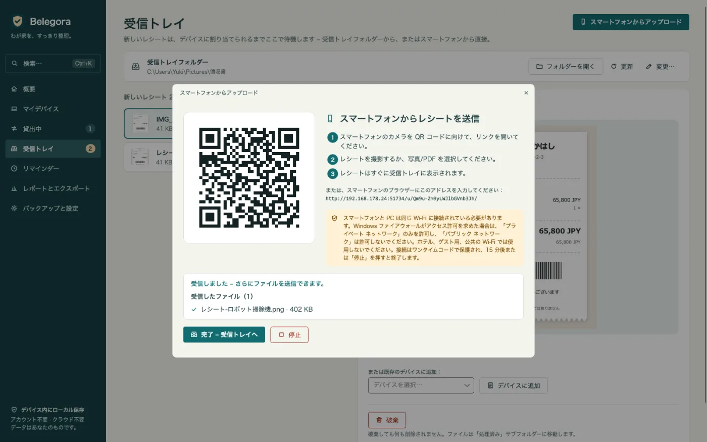
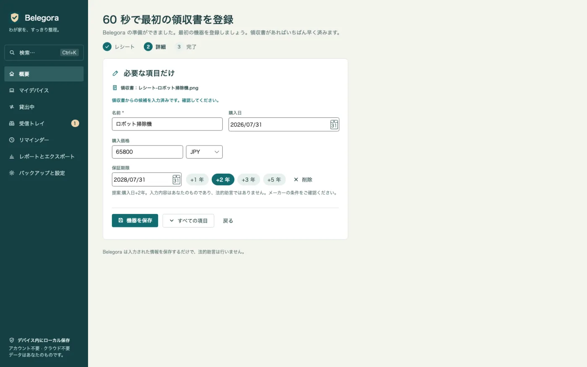
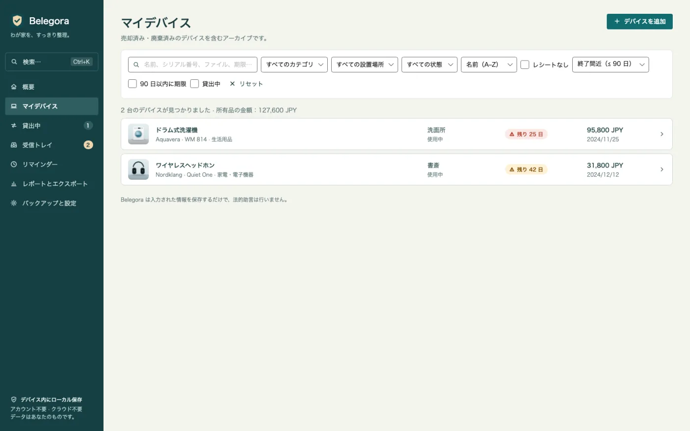
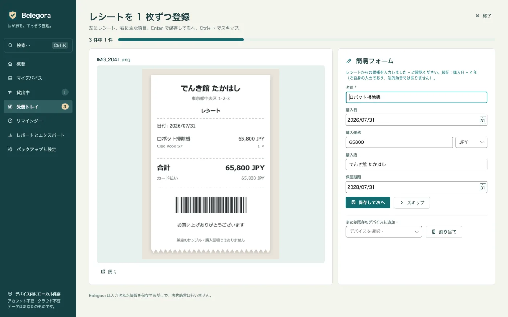
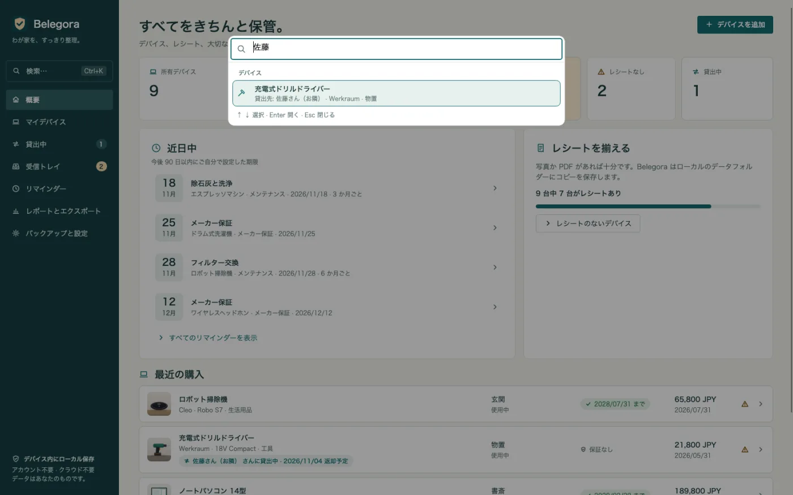
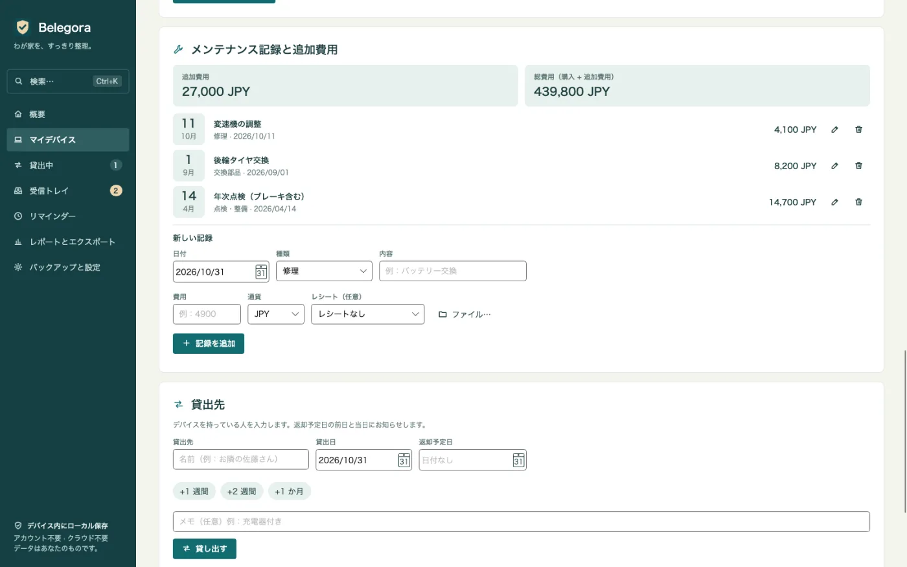
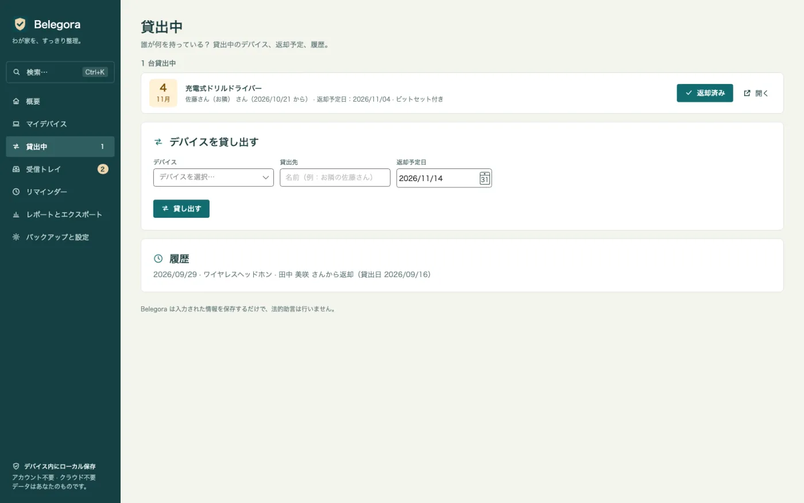
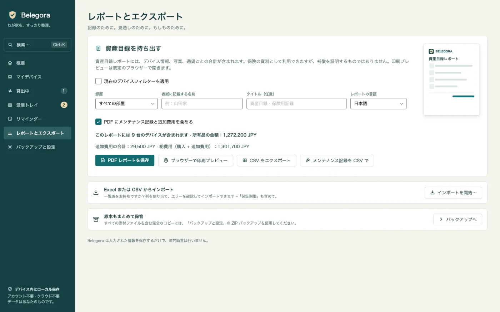
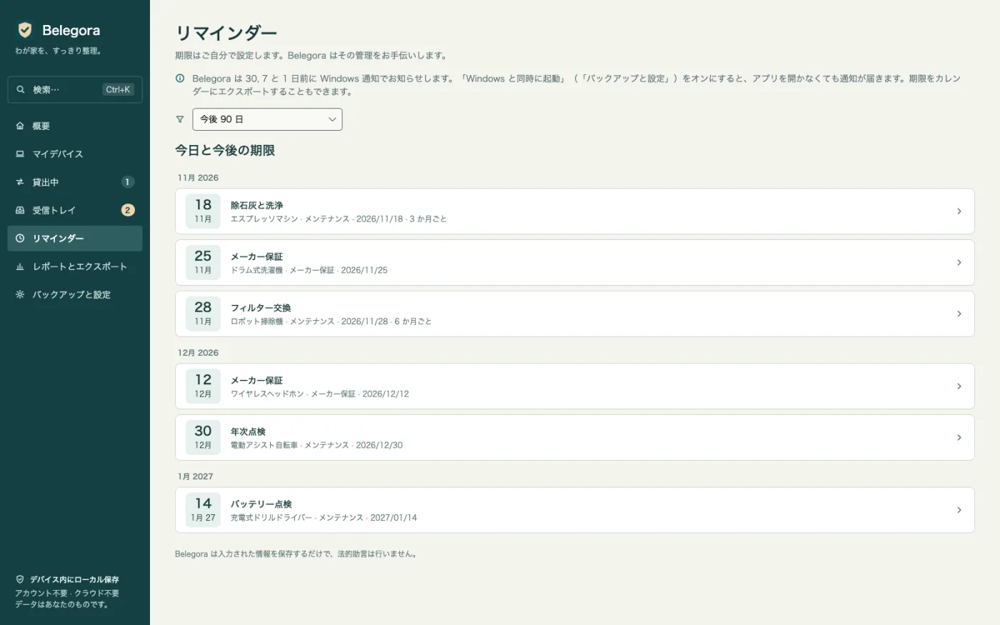

期限前にお知らせ
保証、返品、保険、メンテナンス。好きな日数前にWindows通知でお知らせします。
レシートの取り込み、項目の提案、期限前のお知らせ。面倒な作業はBelegoraにおまかせ。
保証、返品、保険、メンテナンス。好きな日数前にWindows通知でお知らせします。
QRコードを読み取り、ブラウザで写真をアップロード。Wi-Fi経由で受信箱に届きます。ケーブルもクラウドもアプリも不要。
レシートから購入日、金額、購入店を提案。確認して保存すれば、ワンクリックで機器を登録。
機器一覧で保証切れが近いものがひと目でわかり、「保証期限」列も表示されます。
名前・シリアル番号・購入店・タグ・ファイル・貸出先で機器を検索。PDF作成やバックアップなどの操作も矢印キーと Enter で。
たまったレシートを次々に。左にレシート、右に候補入りの簡易フォーム。Enter で保存、Ctrl+→ でスキップ。
修理・点検・交換部品・アクセサリーを費用とともに記録。機器ごとの追加費用と総費用をPDF・CSVにも。
ドリルは誰の手元に？ 貸出先・貸出日・返却予定をお知らせと履歴つきで管理。週に1回のサマリー通知も。
水濡れや盗難のあとに。表紙、部屋別の一覧、合計、写真、レシート画像入りのレポートを作成。言語も選べます。
これまでの一覧を列の対応付けで取り込み。CSVへの書き出しや、期限のICS書き出しにも対応。
添付ファイルを含めて自動でバックアップ。復元前にプレビューで内容を確認できます。
クラウド、アカウント、広告、トラッキングなし。データはあなたのPCに残ります。
ご注意：Belegoraは入力された情報と期限を保存するもので、法的助言は行いません。通知はBelegoraの起動中に表示されます（Windowsと同時に起動する設定も可能）。文字認識はWindowsのOCRを使用し、対応するWindows言語パックが必要です。
スマホからQRコードで写真を送るか、受信フォルダーにファイルを置くか、Excelの一覧を取り込みます。
Belegoraが日付、金額、購入店を提案。機器を登録し、期限と通知のタイミングを設定します。
期限前にBelegoraがお知らせ。万一のときは保険用レポートを数分で作成できます。









14.99ユーロ
買い切り（ドイツでの予定価格）
Microsoft Storeでの提供に向けて準備中です。価格は国によって異なる場合があります。
見られるのはあなただけです。Belegoraは当社にも第三者にもデータを送信せず、アカウントやテレメトリーもありません。スマホからの送信はローカルネットワーク内でのみ動作します。
PC内のアプリデータフォルダー（%LOCALAPPDATA%\MinhStudios\Belegora）に、添付ファイルのコピーや自動バックアップと一緒に保存されます。
Belegoraでバックアップ（全データと添付ファイルを含むZIP）を作成し、新しいPCにコピーしてBelegoraをインストールし、復元します。復元内容はプレビューで確認できます。
いいえ。Belegoraは入力された情報と期限を保存するもので、法的助言は行いません。権利の有無は販売店、メーカー、保険会社にご確認ください。
通知はBelegoraの起動中に表示されます。Windowsと同時に起動する設定も可能です。期限をICSでカレンダーに書き出すこともできます。